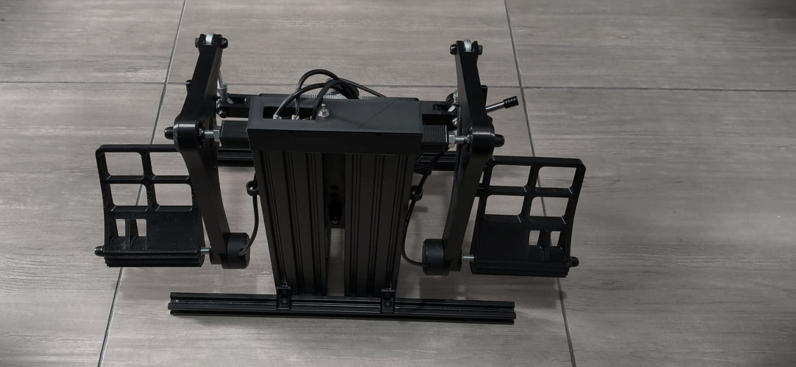
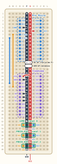
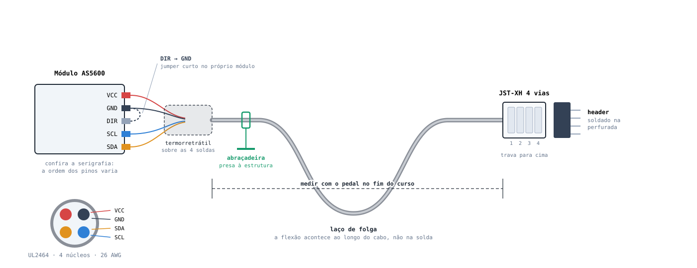
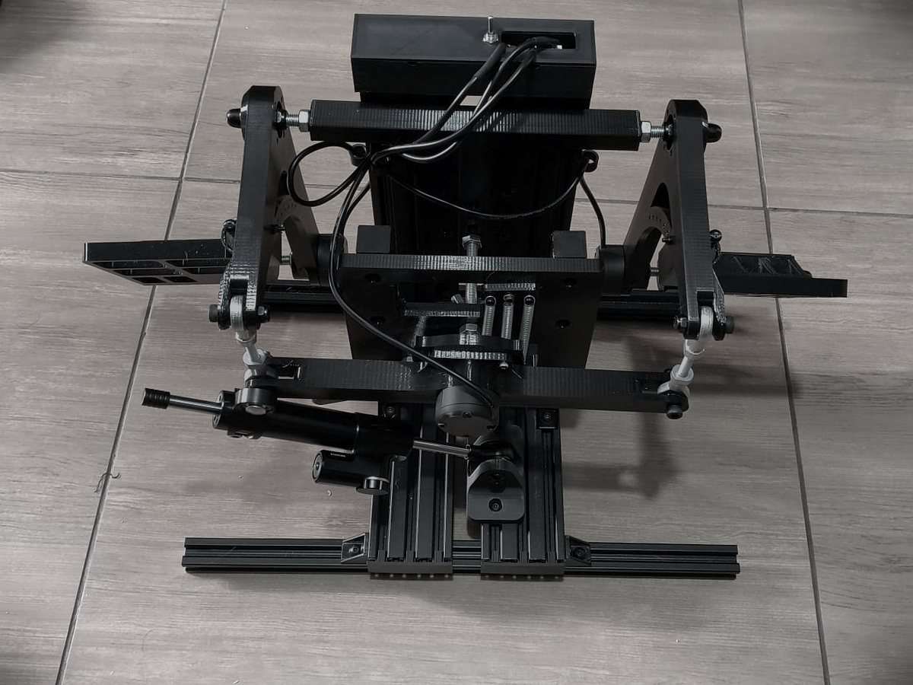
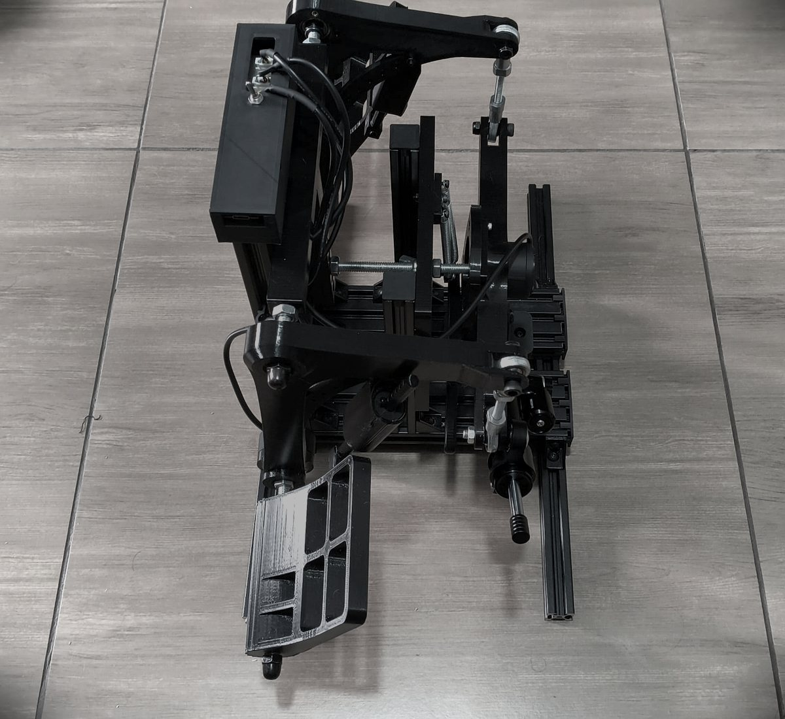

Pedal de leme pendular para simulação de voo, com sensor magnético sem contato. Três AS5600 leem os ângulos e um Pro Micro publica o resultado como joystick USB HID — sem potenciômetro, sem contato, sem desgaste no caminho do sinal.

Conecta na placa pela porta USB, mostra os três eixos ao vivo e grava a calibração na EEPROM. Sem instalar nada.
Esquema de ligação, layouts de placa e chicote, prontos para imprimir e usar na bancada.
| Eixo HID | Fonte | Faixa |
|---|---|---|
| Rz | leme | −16383 … +16383 |
| X | freio de biqueira esquerdo | 0 … 4095 |
| Y | freio de biqueira direito | 0 … 4095 |
| Item | Qtd | ~R$ |
|---|---|---|
| Pro Micro (ATmega32U4, USB HID nativo) | 1 | 35 |
| Módulo AS5600 | 3 | 75 |
| Ímã diametral Ø6×2,5 mm | 3 | 24 |
| Multiplexador I²C TCA9548A (módulo HW-617) | 1 | 12 |
| Placa de tiras, conectores JST-XH, cabo UL2464 4×26 AWG | — | 25 |
| Total da eletrônica | ~170 |
O ímã tem que ser diametral — magnetizado de lado a lado, não axial. Some a isso os parafusos M5 com castanhas de 2020, filamento para a caixa e a mecânica do pedal.

Placa estilo protoboard: linhas horizontais de 5 furos separadas por dois trilhos verticais centrais, que viram GND e VCC. Pro Micro e TCA9548A montam a cavalo, com uma fileira de pernas em cada metade. Há também o layout para placa perfurada lisa, imprimível em tamanho real.

Três chicotes iguais, um por sensor. Cabo UL2464 de 4 núcleos, 26 AWG, com JST-XH de 4 vias só do lado da placa.
Caixa de duas peças para a placa de controle, com saída dos chicotes pela tampa, recorte para o USB, furo para o interruptor de reset e dois furos de fixação em perfil 2020.
↓ case_base.stl ↓ case_tampa.stl case.scad (paramétrico)
As medidas da placa, do conector USB e das posições dos conectores estão como parâmetros no topo do
case.scad. Ajuste lá e regere com openscad -o case_base.stl -D 'PECA="base"' case.scad.
A barra do pedal gira sobre rolamentos e o ímã diametral fica na ponta da barra, coaxial com o eixo de giro. O AS5600 fica fixo de frente para o ímã, sem encostar em nada. O retorno é por mola, e a posição de repouso dela é o zero elétrico.
OK
ao longo do curso inteiro, não só em repouso. Se piscar para fraco ou sem ímã, aproxime.

A caixa da eletrônica monta no perfil 2020 vertical. Os chicotes saem pela tampa com laço de folga, o USB-C fica acessível na ponta e o interruptor de reset no topo — sem precisar abrir nada.
Precisa da biblioteca Joystick (2.1.1+). Placa: Arduino Micro / Leonardo.
arduino-cli compile --fqbn arduino:avr:micro firmware/open_rudder arduino-cli upload -p COM5 --fqbn arduino:avr:micro firmware/open_rudder
Sem o TCA9548A ligado, o firmware cai sozinho para o modo de 1 sensor (só o leme) — dá para montar por partes.
Com cabo longo até as biqueiras, se aparecer sem resposta no eixo, baixe I2C_CLOCK
para 100000 no topo do sketch.
Sem calibrar, o eixo não significa nada: o AS5600 mede 0–360° absolutos e o centro do seu pedal cai num ponto arbitrário desse círculo.
OK durante todo o curso.
Se o leme sair espelhado no simulador, use o comando 0i e grave de novo — não precisa mexer na fiação.
Conferência final: pise em cada pedal olhando qual eixo se move.
115200 baud, uma linha por comando. Eixos: 0 leme · 1 freio esq · 2 freio dir.
| Comando | Efeito |
|---|---|
| 0c | captura o centro do leme (pedais soltos) |
| 0l 0r | batente esquerdo · batente direito |
| 1c 1r | repouso · fundo do freio esquerdo (idem 2c / 2r) |
| 0i | inverte os lados do leme |
| 1d4 | deadzone do eixo 1 = 4 counts (sem número, cicla 0/2/4/8) |
| 0x30 | expo do eixo 0 = 30% (sem número, cicla 0/15/30/45) |
| w e | grava na EEPROM · apaga |
| ? s | mostra tudo · status dos ímãs |
| p | monitor legível |